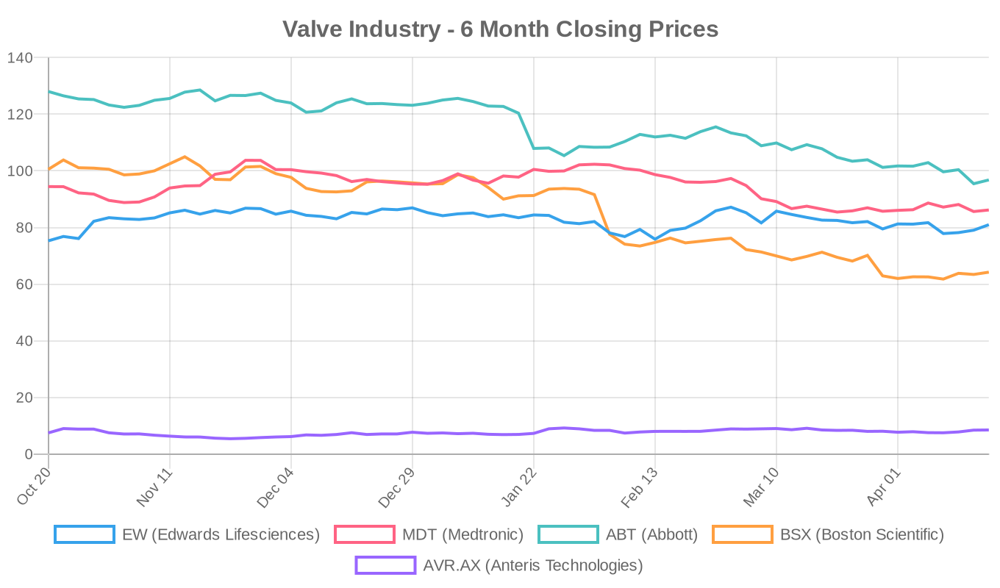

|
|||||||||
|
April 19, 2026 By E. Nolan Beckett |
|||||||||
|
|||||||||
Executive SummaryNew five-year data from the Evolut Low Risk Trial show that isolated TAVR and surgical aortic valve replacement deliver equivalent survival and reintervention rates in carefully selected low-risk patients — but a persistent pacemaker gap (27% vs 9%) remains a major concern. A novel trial suggests the GLP-1 drug tirzepatide may reduce valve thrombosis and paravalvular leak after TAVR in obese patients, introducing a provocative "cardio-metabolic" strategy that needs careful scrutiny. Meanwhile, a JACC Advances study examines how social determinants of health influence access to both TAVR and surgical valve replacement — a critical equity dimension as the field debates expanding TAVR indications. Today's digest brings together an important post hoc analysis from the landmark Evolut Low Risk trial (Annals of Thoracic Surgery), a first-of-its-kind metabolic modulation trial in the TAVR space, practical surgical bailout considerations for maldeployed transcatheter tricuspid valves, and a new first-in-human tricuspid replacement device entering clinical testing. On the financial side, Edwards Lifesciences is rallying ahead of next week's earnings call, with TD Cowen reiterating its buy rating on TAVR strength, while Boston Scientific faces headwinds despite a strong consensus ahead of its own earnings report on Tuesday. Today's Key Findings
Aortic Valve (TAVR/TAVI)Evolut Low Risk: 5-Year Isolated Procedure Analysis[NOTABLE] Ramlawi et al. present a post hoc analysis of the Evolut Low Risk Trial restricted to patients who underwent isolated procedures (667 TAVR, 497 SAVR), excluding those with concomitant PCI, CABG, or crossovers. At 5 years, the composite of all-cause mortality or disabling stroke was virtually identical: 15.5% (TAVR) vs 14.6% (SAVR, P=0.84). Cardiovascular mortality trended nonsignificantly lower with TAVR (6.9% vs 8.3%, P=0.36), while reintervention rates were comparable (3.0% vs 2.2%, P=0.51). Moderate or greater paravalvular regurgitation was rare in both groups (0.5% vs 0%). Editorial Note: The headline numbers are reassuring for TAVR, but several caveats merit attention. First, this is a post hoc subgroup analysis — the original trial was designed and powered for the full cohort. Second, the 27.3% permanent pacemaker rate with self-expanding TAVR versus 8.9% with SAVR (P<0.001) remains a persistent Achilles' heel. The long-term consequences of RV pacing — including pacing-induced cardiomyopathy — are well documented and particularly concerning in low-risk patients with decades of expected life ahead. Third, 5-year follow-up, while encouraging, does not address the durability question beyond the first half of a bioprosthetic valve's expected lifespan. Under the 2025 ESC/EACTS guidelines, these patients (presumably many aged ≥70 with tricuspid aortic valves) would fall into the TAVI-preferred zone; under ACC/AHA 2020, the 65-80 range remains a shared decision-making territory. The data support Evolut TAVR as a suitable option in selected low-risk patients but should not be extrapolated to younger cohorts where the pacemaker burden and unknown 10-15 year durability loom larger. TAVR-MET: Tirzepatide for Post-TAVR Valve Healing in Obesity[NOTABLE] Thirugnanam et al. report results from the TAVR-MET trial, a prospective, randomized, open-label, multicenter study of 260 obese patients (BMI ≥30) undergoing transfemoral TAVR. Patients randomized to tirzepatide (a dual GIP/GLP-1 receptor agonist) initiated 4 weeks pre-TAVR and continued for 12 months experienced significantly lower rates of hypo-attenuated leaflet thickening (HALT; 8.4% vs 21.6%, P=0.002) and ≥mild paravalvular leak (10.7% vs 25.3%, P=0.006) at 6 months, with marked CRP reductions and no increase in major bleeding. Editorial Note: This is an intellectually fascinating concept — that metabolic modulation could improve bioprosthetic valve healing. However, major caveats apply. The open-label design introduces bias in clinical assessments. The primary endpoint (HALT on 4D-CT) is a surrogate marker whose clinical significance remains debated; many patients with subclinical leaflet thrombosis never experience clinical events. The 6-month follow-up is extremely short — we need to know whether these imaging differences translate into reduced structural valve deterioration, thromboembolism, or need for reintervention. The 21.6% HALT rate in the control arm is also notably high compared to other series, raising questions about patient selection. Tirzepatide's weight loss and anti-inflammatory effects are real, but attributing valve-specific improvements to metabolic modulation versus confounding (e.g., improved hemodynamics from weight loss alone) requires blinded confirmation. This warrants a larger, blinded, event-driven trial before any clinical recommendations can be drawn. Health-Related Social Needs and AS Treatment AccessSadri et al. in JACC Advances examine the impact of health-related social needs on access to both TAVR and SAVR. While the abstract is not yet available, the Stanford/VA-based author team (including Fearon and Burdon) suggests this explores how socioeconomic barriers — housing instability, food insecurity, transportation — influence which patients reach the heart team and which modality they receive. As the field debates expanding TAVR to younger, lower-risk populations, understanding who gets left behind in either pathway is essential. Both the ACC/AHA and ESC guidelines emphasize shared decision-making within a heart team framework, but neither adequately addresses how social determinants distort that process. Lifetime Management: A PrimerSafdar et al. in The American Journal of Medicine provide a review of aortic stenosis management that mirrors the evolving paradigm from surgical risk-based to age/life expectancy/durability-based decision-making. The review aligns with the 2025 ESC emphasis on lifetime management — planning the index procedure with future reinterventions in mind. This is a useful resource for generalists who often serve as the gateway to valve referral. Commissural Alignment for Self-Expanding ValvesNishimura et al. in JACC: Cardiovascular Interventions describe a radiopaque marker-guided technique for achieving commissural alignment during intra-annular self-expanding transcatheter heart valve implantation. Commissural alignment is increasingly recognized as critical for future valve-in-valve feasibility — misaligned commissures can obstruct coronary access and compromise future THV seating. The 2025 ESC guidelines explicitly highlight commissural alignment and neo-skirt height as considerations for lifetime management planning. Edwards Intuity Explant With Annular EnlargementMarsh et al. in the Journal of Cardiothoracic Surgery report the first US case of Edwards Intuity rapid deployment valve explantation with concomitant Rittenhouse-Manouguian annular enlargement. A 69-year-old woman with a prior 23mm Intuity valve developed severe structural valve deterioration at 7 years (mean gradient 60 mmHg). The prosthesis was densely adherent, requiring transection for safe removal. Valve-in-valve TAVR was considered but rejected due to small valve size and relatively young age — precisely the lifetime management calculus the ESC 2025 guidelines describe. This case underscores that (1) rapid-deployment valve explantation is feasible but technically demanding, and (2) index procedure decisions have downstream consequences that must be anticipated. Tricuspid Valve (TriClip, TTVR)Surgical Bailout for Maldeployed Evoque TTVRJohnson et al. in JACC Case Reports outline technical considerations for emergent surgical conversion after a maldeployed Evoque transcatheter tricuspid valve replacement system. Key steps include securing the delivery system at the groin, establishing CPB without arresting the heart, sequentially releasing ventricular anchors in a rotational pattern, and intraoperative assessment of repair versus replacement. The authors caution against ice-cold saline (which can trigger ventricular arrhythmia in the beating-heart setting) and emphasize that central bicaval cannulation may crowd the surgical field. Editorial Note: As transcatheter tricuspid procedures scale — the ESC 2025 guidelines now rate TTVR as Class IIa — centers must have robust surgical bailout protocols. The TRISCEND II trial and the recent TVT Registry data (30-day mortality 3.1%, new pacemaker 15.9%) remind us that these are complex procedures in fragile patients. This case report is a valuable technical contribution that should be required reading for programs building transcatheter tricuspid capabilities. TRICENTO G2: New First-in-Human Tricuspid Replacement TrialA new first-in-human trial (NCT07536724) of the TRICENTO G2 transcatheter valve system for tricuspid regurgitation was registered this week by Medira GmbH, with plans to enroll 10 patients. The TRICENTO platform uses a unique caval implant design. This adds to a growing pipeline of transcatheter tricuspid replacement systems (Evoque, GATE, and others) competing for position in a rapidly evolving market. The tricuspid landscape is increasingly crowded, and whether repair (TriClip, PASCAL) or replacement ultimately dominates remains an open question. Surgical vs. Transcatheter ComparisonsThe Evolut Low Risk 5-year isolated cohort analysis (discussed above) is today's primary TAVR vs SAVR comparison. The equivalence in mortality and reintervention rates is noteworthy, but the pacemaker disparity and limited follow-up duration remain the critical counterarguments. Importantly, the ESC 2025 guidelines set the TAVI preference threshold at ≥70 years with tricuspid aortic valves and transfemoral access — a threshold that may encompass much of this trial population. For patients under 70, the ESC still recommends SAVR when surgical risk is low (STS-PROM + EuroSCORE II <4%), and the ACC/AHA 2020 guidelines set that threshold even lower at 65. The Intuity explant case also illustrates the surgical-transcatheter interface from the reintervention angle: when valve-in-valve TAVR is suboptimal (small bioprosthesis, young patient), surgical explant with annular enlargement provides a durable solution — but at the cost of significantly increased technical complexity. Device & TechnologyBiodegradable PFO Occluders: Khan et al. in Expert Review of Cardiovascular Therapy review biodegradable devices for transcatheter PFO closure, including the BioSTAR, Mallow, ABSNow, and Carag platforms. These offer an alternative to permanent nitinol implants by providing initial structural support followed by controlled resorption. While not directly a valve technology, the principle of biodegradable structural implants has theoretical implications for future transcatheter valve design — and the concept of avoiding permanent metal in young patients resonates with the lifetime management philosophy now emphasized in the ESC 2025 valve guidelines. INFLATE Study — Novel PTV Balloon for TAVI: A new trial (NCT06816485) is now recruiting 93 patients to evaluate a novel percutaneous transcatheter valvuloplasty (PTV) balloon from Biosensors Europe in patients undergoing TAVI for severe AS. Balloon pre-dilation and post-dilation practices vary widely across centers, and dedicated balloon technologies may improve procedural consistency. Industry & MarketTAVR Market Growth: An openPR market report projects continued expansion of the global TAVR market, driven by expanded indications into lower-risk and asymptomatic populations. The 2025 ESC guidelines' endorsement of early intervention in asymptomatic severe AS (Class IIa based on EARLY TAVR, RECOVERY, AVATAR, EVoLVeD) and the lowered age threshold for TAVI preference (≥70 years) could significantly expand addressable patient volumes in Europe and eventually in the US when ACC/AHA guidelines are updated. Structural Heart Procedures Market: A separate openPR analysis highlights Medtronic, Abbott, and Boston Scientific as the dominant players in a structural heart procedures market projected to see strong growth, encompassing TAVR, TEER, and transcatheter tricuspid therapies. India TAVR Expansion: Multiple reports from Indian media (NewsMeter, Hans India) describe TAVR being performed "without incision" in smaller-city hospitals in Andhra Pradesh and Karnataka, reflecting global diffusion of the technology into emerging markets. This is the growth frontier for device manufacturers — but it raises important questions about operator volumes, institutional capability, and whether appropriate heart team infrastructure exists at these centers. Financial AnalysisThe structural heart financial landscape this week is dominated by two imminent earnings catalysts: Edwards Lifesciences reports on April 23 and Boston Scientific on April 22. The sector showed green across the board today, with Edwards leading the pack (+2.45%). TD Cowen reiterated its buy rating on Edwards Lifesciences, citing continued TAVR procedure volume strength. This aligns with the broader thesis that TAVR volumes remain resilient and could accelerate as ESC 2025 guidelines expand indications to asymptomatic patients and lower the age threshold for TAVI preference. Edwards is also navigating its strategic pivot toward TMVR (SAPIEN M3, EVOQUE mitral) and transcatheter tricuspid (EVOQUE, PASCAL), positioning the company for the next wave of structural heart growth. Institutional trading activity in Edwards was mixed: Ninety One SA Pty Ltd added shares while Birch Hill Investment Advisors sold 13,385 shares and KBC Group NV reduced its position — reflecting the typical pre-earnings positioning churn rather than any directional signal. Boston Scientific faces its own earnings report just one day earlier, with analysts expecting $0.79 EPS on $5.17B revenue. The stock has been under significant pressure, down 36% over six months — one of the steepest declines in the medtech space — despite maintaining a "strong buy" consensus. The gap between current price ($64.23) and mean analyst target ($96.66) suggests either a significant rerating opportunity or that analysts haven't yet adjusted targets to reflect macro headwinds. Valve Industry Stocks Edwards Lifesciences (EW)
Edwards outperformed competitors on Thursday, rising 2.45% ahead of its Q1 earnings report next Wednesday. TD Cowen reiterated its buy rating, specifically citing TAVR procedural volume strength. The stock is trading at the upper end of its 5-day range ($77.10-$81.69) and has recovered meaningfully from its 52-week low of $68.63. The forward P/E of 24.39x (versus trailing 44.75x) reflects expectations of meaningful earnings growth, likely driven by TAVR volume expansion and emerging TMVR/tricuspid revenues. The ~19% upside to analyst consensus target suggests the street remains bullish. Earnings on April 23 will be closely watched for TAVR growth trajectory commentary, particularly regarding European adoption patterns post-ESC 2025 guideline update and the SAPIEN 3 Ultra franchise performance. Medtronic (MDT)
Medtronic has been in a persistent downtrend, losing nearly 9% over six months and trading well below its 52-week high of $106.33. In the structural heart space, today's Evolut Low Risk 5-year data is a positive data point — the isolated cohort analysis reinforces the self-expanding platform's competitive position. However, the 27% pacemaker rate remains a headwind versus balloon-expandable competitors. The Intrepid TMVR pivotal trial continues enrolling (now at 1,056 patients), representing Medtronic's major bet on the transcatheter mitral space. The forward P/E of 14.22x — the lowest among major valve companies — and 27% upside to consensus target suggest value, but the diversified business model means structural heart is only one piece of the MDT thesis. Abbott (ABT)
Abbott has suffered a steep 24% decline over six months, recently touching new 52-week lows near $93.92. Despite the downturn, the structural heart portfolio — TriClip (TRILUMINATE data), MitraClip (COAPT Class I upgrade in ESC 2025), and the REPAIR-MR trial (MitraClip vs surgery for primary MR) — represents significant long-term value. The TriClip platform benefits directly from the ESC 2025 Class IIa recommendation for transcatheter TR therapy. MitraClip's ESC upgrade to Class I for ventricular SMR expands the addressable market meaningfully. The 26% upside to consensus target reflects analyst confidence that current price levels overweight near-term macro concerns relative to the structural heart growth story. Boston Scientific (BSX)
Boston Scientific has been the worst performer in the structural heart universe, down 36% over six months and trading near 52-week lows. This is paradoxical given the "strong buy" consensus from 32 analysts and the 50% upside implied to the mean target of $96.66. In structural heart, BSX's PASCAL platform is positioned in both the mitral (CLASP II TR) and tricuspid spaces, and the ACURATE neo2 TAVI system competes primarily in European markets. Tuesday's earnings report (April 22) will be a critical catalyst — the market is pricing in significant downside risk, and any positive surprise on revenue or guidance could trigger a sharp rerating. The structural heart segment specifically should be watched for PASCAL adoption trends and any commentary on the competitive landscape versus Edwards and Abbott. Anteris Technologies (AVR.AX)
Anteris Technologies, developing the DurAVR single-piece tissue aortic valve using ADAPT anti-calcification technology, is the speculative play in the structural heart space. The stock has gained 14% over six months but remains pre-revenue with a negative forward P/E. The DurAVR's single-piece design theoretically addresses durability concerns — the central question in the TAVR-vs-SAVR debate for younger patients. Clinical data will be the key catalyst. Note: JenaValve Technology (Trilogy THV for AR/AS), J Valve Technology, and Meril Life Sciences (Myval) are private companies with no public stock data available. JenaValve's ARTIST trial (NCT06608823) comparing Trilogy with SAVR for aortic regurgitation is actively recruiting and represents one of the most important trials in the pure-AR transcatheter space. Market Outlook: The structural heart sector faces a pivotal week with both BSX (April 22) and EW (April 23) reporting earnings. The divergent 6-month performance trajectories — Edwards modestly positive, Abbott and Boston Scientific significantly negative — reflect differing exposures to macro headwinds and structural heart-specific catalysts. The ESC 2025 guidelines' expansion of transcatheter indications across all three valve positions (aortic, mitral, tricuspid) represents a secular tailwind that should ultimately benefit all three major players, but near-term execution, pipeline delivery, and macroeconomic conditions will determine when share prices reflect that underlying growth. Clinical Trial UpdatesAortic Valve Trials
Mitral Valve Trials — Repair
Mitral Valve Trials — Replacement
Tricuspid Valve Trials — Repair
Tricuspid Valve Trials — Replacement
Other Relevant Trials
Closing ThoughtNext week is one of the most consequential in the structural heart financial calendar: Boston Scientific reports Tuesday and Edwards Lifesciences reports Wednesday. The clinical data stream reinforces that TAVR outcomes at 5 years in low-risk patients are solid — but the persistent pacemaker signal and the absence of truly long-term durability data beyond a decade mean the TAVR-vs-SAVR debate is far from settled, particularly for patients under 70. The tirzepatide story is intellectually seductive but clinically premature. As always in structural heart: the enthusiasm is warranted, but the skepticism is necessary. — E. Nolan Beckett | The Valve Wire |
|||||||||
|
|
|||||||||
|
|||||||||
|